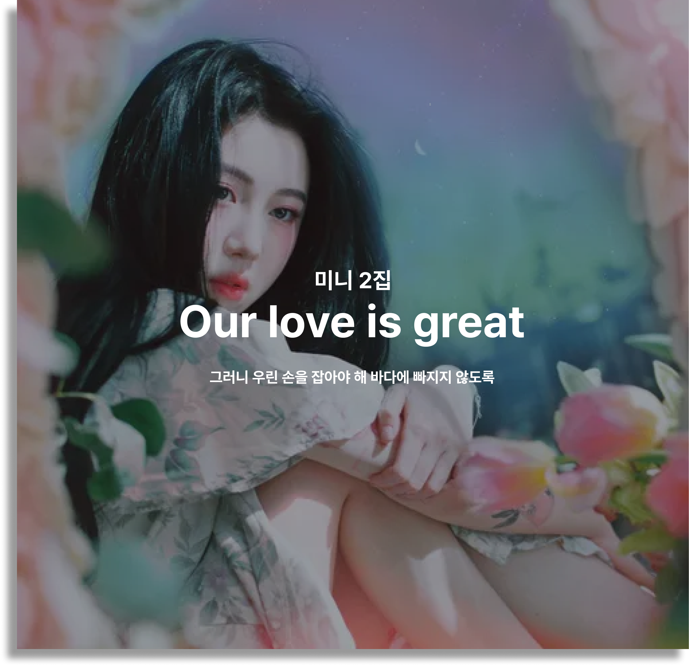
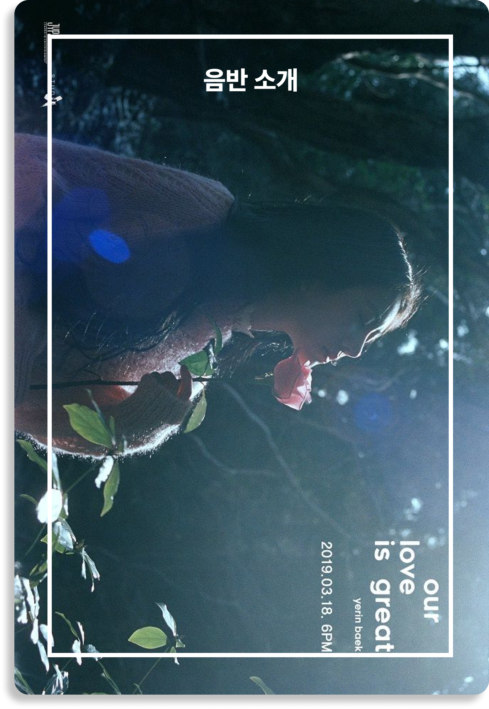
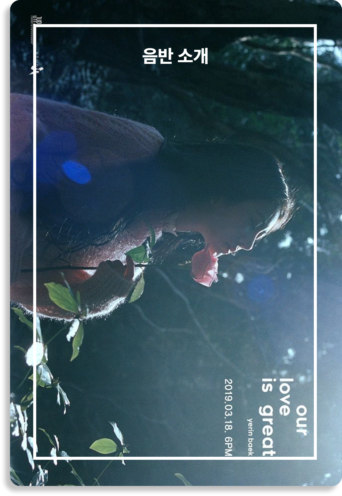

VINYL Our love is great
백예린이 2019년 3월 18일 두 번째 솔로 미니앨범 'Our love is great'를
발매한다.
디지털 싱글 '우주를 건너', 'Bye bye my blue'로 독보적인 음색과 음악적
감정선을 선사했던 백예린이 다시 한 번 소중하고 섬세한 마음을 전한다.
'Our love is great'는 2015년 11월 발매한 첫 미니앨범 'FRANK' 이후 두
번째로 선보이는 디지털 미니앨범이자, 2016년 12월 발매한 크리스마스
시즌송 'Love you on Christmas' 이후 2년 3개월 만에 솔로 행보를 담은
앨범.
새 앨범 'Our love is great'에는 타이틀곡 '그건 아마 우리의 잘못은 아닐
거야'를 비롯해 총 7트랙이 수록된다. 백예린은 앨범 전곡 작사, 작곡에
이름을 올리며 본인만의 음악 세상을 아름답고 서정적으로 표현했다.
타이틀곡 '그건 아마 우리의 잘못은 아닐 거야'는 '관계 안에서 서로
의도치 않게 피어난 불안함은 우리 잘못이 아니며, 결국 그것은 우리를 더
크게 만들어 줄 것'이라는 심오한 메시지를 담았다. 백예린은 듣는 이의
마음을 유영하는 듯한 영롱한 멜로디 속에서 고운 음색을 드러내며
감미로운 분위기를 완성했다.
1번 트랙 '야간비행 (魔女の花)'은 백예린이 영화 '마녀와 메리의 꽃'을
보고 영감을 받고, 영화에 대한 해석을 덧대어 완성한 노래. 영화에서
등장하는 ‘야간비행’이라는 푸른 꽃은 툭하면 실수만 하는 보잘것없는
아이이면서도, 메리에게 하룻밤 사이 특별한 힘을 주는 꽃으로 등장한다.
백예린은 자신도 누군가에게 그런 힘이 담긴 꽃을 찾아 주고 싶다는 마음을
담아 '야간비행'을 작사, 작곡했다.
'Dear my blue'는 소중한 사람이 슬퍼할 때 자신이 할 수 있는 일 중에
가장 진실된 방법으로 위로하기 위해 만든 곡. 피아노 선율과 백예린의
목소리 단 두 가지의 심플한 구성만으로도 충분한 울림을 선사한다.
'Our love is great'는 사랑하는 사람들과 같이 연주하기 위해 수록한 곡.
백예린은 황홀하고 낭만적인 무드 속에서 본인의 모습, 곁을 함께한 소중한
사람들을 노래한다.
'내가 날 모르는 것처럼 (Feat. 카더가든)'은 기존에 사운드 클라우드를
통해 공개한 곡을 정식 음원으로 선보이는 것이며 '내가 느끼고 있는
감정이 어떤 것인지, 감히 들춰보아도 되는 것인지 잘 모르겠는 마음'을
이야기한다.
'지켜줄게'는 백예린이 '세상에서 지켜주고 싶은 모든 것, 무언가를
지켜주고 싶은 모든 사람들이 들어줬으면 하는 마음'을 담아 노래했다.
백예린은 가사에 가장 친한 친구, 나랑 아무 상관없이 지나가는 고양이,
'다시 만날 수 있을까' 싶은 시골에 있는 강아지들, 고가도로에 삐져나온
꽃, 푸른 잎사귀 등을 보고 느꼈던 마음들을 눌러 담아 '순수한 사랑'을
표현했다.
'내가 날 모르는 것처럼 (2019 ver.)'은 기존 곡에서 백예린의 파트만 살린
버전으로 새롭게 편곡했다. 오롯이 백예린의 목소리만으로 꽉 채워 기존의
곡과는 또 다른 느낌을 전한다.
'Our love is great'에서 백예린은 탁월한 음악적 오브제 선택을 통해
수려한 곡 전개를 펼친다. 여기에 순수한 목소리로 진실된 감성을 전달하며
'결국은 사랑과 늘 함께 해온 내 주변과 내 모습들'에 대한 시선을
노래한다.
사랑에 대한 저의 시선과 방식을 담은 앨범입니다.
덕분이에요. 이룬 것 하나 없다 해도 이렇게 사랑받고 기대받고 기다려주는
분들 덕에 이것저것 하길 잘했다는 생각이 들어요. 과분한 사랑과 존중,
정말 감사해요.
1. 야간비행(魔女の花)
작사 : 백예린 / 작곡 : 백예린, 구름 / 편곡 : 구름
영화 [마녀와 메리의 꽃]을 보고 영감을 받은 가사, 영화에 대한 나의
해석을 덧대 완성한 노래다. 영화에서 등장하는 ‘야간비행’이라는 푸른
꽃은 툭하면 실수만 하는 보잘것없는 아이, 메리에게 하룻밤 사이 특별한
힘을 주는 꽃인데, 나도 누군가에게 그런 힘이 담긴 꽃을 찾아 주고 싶다는
마음에 만든 노래다.
2. 그건 아마 우리의 잘못은 아닐 거야 [Title]
작사 : 백예린, 구름 / 작곡 : 백예린, 구름 / 편곡 : 구름
관계 안에서 서로 의도치 않게 피어난 불안함은 우리 잘못이 아니며, 결국
그것은 우리를 더 크게 만들어 줄 것이라고 말해주고 싶다.
3. Dear my blue
작사 : 백예린 / 작곡 : 백예린 / 편곡 : 백예린, 윤석철
소중한 사람이 슬퍼할 때 내가 할 수 있는 일 중에 가장 진실된 방법으로
위로하고 싶어 이 곡을 만들었다.
4. Our love is great
작사 : 백예린 / 작곡 : 백예린, 구름 / 편곡 : 구름
사랑하는 사람들과 같이 연주하기 위해 수록한 곡이다. 결국은 사랑과 늘
함께 해온 내 주변과 내 모습들을 얘기하고 싶었다.
5. 내가 날 모르는 것처럼 (Feat. 카더가든)
작사 : 백예린, 카더가든 / 작곡 : 백예린, 구름, 카더가든 / 편곡 : 구름
내가 느끼고 있는 감정이 어떤 것인지, 감히 들춰보아도 되는 것인지 잘
모르겠어서 두서 없이 쓴 노래다.
6. 지켜줄게
작사 : 백예린 / 작곡 : 백예린 / 편곡 : 백예린, 구름
세상에 지켜주고 싶은 모든 것, 지켜주고 싶은 모든 사람들이 들어줬으면
하는 노래다. 누군가 시키지 않아도, 나에게 무언가 돌아오지 않아도 줄 수
있는 순수한 사랑에 대해 얘기하고 싶었다. 처음엔 가장 친한 친구를
떠올리며, 나랑 아무 상관없는 지나가는 고양이, '다시 만날 수 있을까'
싶은 시골에 있는 강아지들, 고가도로에 삐져나온 꽃, 잎, 등을 보고
느꼈던 마음들을 눌러 담았다.
7. 내가 날 모르는 것처럼 (2019 ver.) 작사 : 백예린 / 작곡 : 백예린,
구름 / 편곡 : 구름